Atlasing
Atlasing in context of DECALmachine is the process of packing individual Decal textures into a single texture sheet, and then having all of those individual Decals, use a single material and set of textures.
This is necessary for efficient rendering in game engines like Unity, Unreal Engine etc.
In DECALmachine this is a 2 step process:
- Atlas Creation
- Atlas Use and Export
Note
An Atlas in DECALmachine is defined by a set of textures, in combination with a data.json file, containing meta data about the specific position of each decal in the atlas.
Atlases and Trim Sheets share the same data format, hence why atlased Decals are also referred to as Trims in the data file.
Atlas Creation
DECALmachine 2.0 provides 2 Atlases ready to go.
One for the Aircraft Decal library, and one for the Example and Example Panels libraries.
So, if you intend to export Decals from these libraries, you don't have to create your own Atlases, you can use the supplied ones.
But if you want to export your own decals, you have to create your own Atlas too.
Note
You can pack Decals from a variety of Decal libraries into a single Atlas. You don't have to create per-library Atlases!
Atlas Creation is done from the Decal, Atlas & Trim Sheet Creation panel.
Use and Export Atlas
Use Atlas
In DECALmachine using an Atlas means, changing a Decal's UVs to match the position of that Decal in the Atlas.
Individual Decals have UVs covering the entire UV space, but atlased Decals only cover a small part of it.
With the UVs changed, all Decals belonging to the same Atlas, will then also share a single Atlas Material.
This process of using an Atlas is reversible, so you can restore your original Decals using unique textures at any time.
Note
Since Trim Sheets use the same data format as Atlases, Trim Decals can use those Sheets as Atlases right away.
There is no need to create new Atlases from Trim Decals, although you still can do that if you want.
Join and Split atlased Decals
For convenience DECALmachine also provides tools to Join and Split atlased Decals, because Decals that share a single Atlas Material, can be rendered more efficiently if they are a single object too.
Export Atlas
Exporting an Atlas simply refers to the process of copying Atlas Textures to the desired target location.
If you want to channel pack the textures, you can do that directly from the Atlas section of the Decal Export Panel
You can optionally export your atlased Decals and any other selected objects from that same panel, or just use Blender's native object export.
Unity
Unity comes with two main render pipelines: HDRP and URP.
HDRP supports deferred rendering, while URP supports only forward rendering, and so no decal shaders.
HDRP
HDRP supplies it's own decal shader, that you can try.
But most likely you'll you want to use a custom shader, for the Decals coming out of DECALmachine.
Deferred Decals will effortlessly blend with any material that's under them, even textured ones
With the advent of Shader Graph, creating your own Decal Shader is easy and everyone can do it.
A Decal shader can be very simple, and for instance only affect normals, or it can be slightly more elaborate - but still pretty simple:
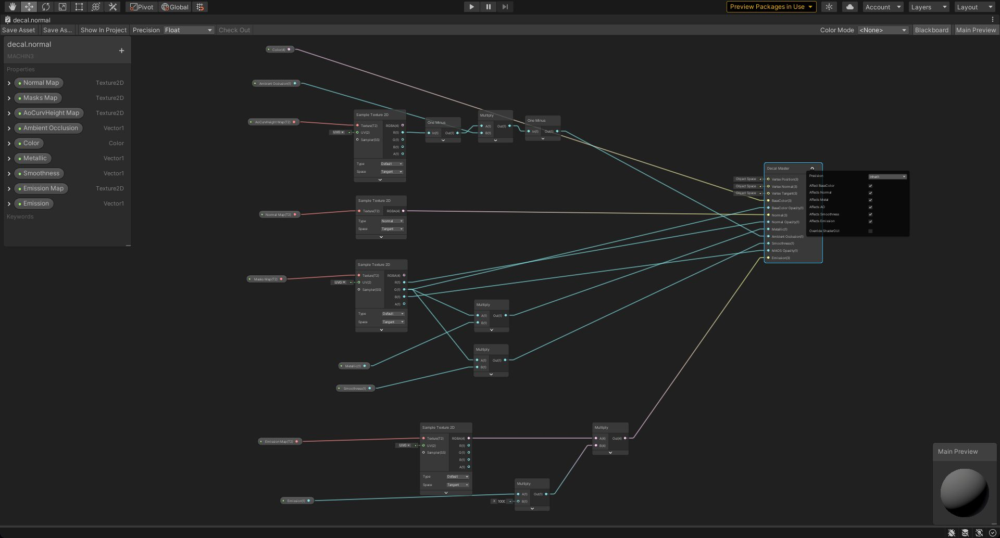 a shader used for Simple/Subset/Panel Decals, affecting color, normals, AO, metalness, smoothness and emission
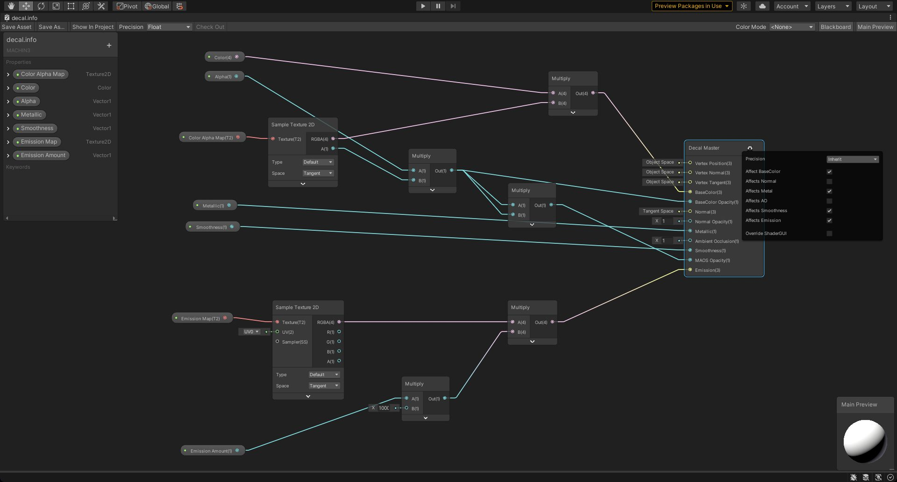 a shader used for Info Decals, affecting, color, metalness, smoothness and emission
You can download the two shaders above from this repo.
Amplify Shader Editor
You can also use ASE to build those exact same shaders.
Not only does ASE provide a better experience, but you can also add parallax to you decals, that looks exactly like the one used by DECALmachine in Blender.
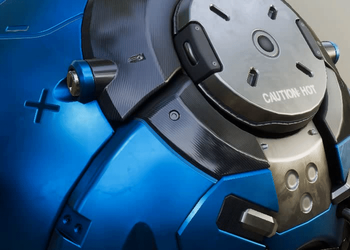 Decal parallax in ASE using a white height map
URP
In URP's forward rendering, there's no way to reproduce the material blending you can have in HDRP. Decals will always be opaque, just like in Blender.
And so if you use URP, I would suggest using Trim Sheets, over Decals.
Note
In theory, you could still use Decals in URP using a simple Lit Shader, optionally alpha mapped.
But you'd be responsible for matching the Decal materials to the underlaying materials yourself.
This is possible with simple, plain materials, but not feasible with textured ones.
Unreal Engine
This section about DECALmachine and Unreal Engine 4 is graciously provided by Thad Clevenger, who was intrumental in the release of DECALmachine 2.0 and provided feedback throughout development.
Note
I would kindly ask you to not contact Thad for support on this specifically and definitely not on DECALmachine in general.
Instead, please submit any questions you may have and discuss this on Blender Artists or polycount.
Background
I am a Senior Artist at Funcom working on our next big project, and I was tasked with helping determine the pipeline for our vehicles/hard surface objects.
After doing a lot of research we ended up deciding to use the mid-poly/decal workflow, that I’m sure most of you are familiar with. This is where DECALmachine comes in. DECALmachine makes the process of creating, managing, and editing decals much easier.
Needless to say, I wanted to add it into our pipeline. However, we were immediately faced with a big problem. UE4 does not have all of the functionality necessary to achieve the same visual results as DECALmachine in Blender or Unity.
Thankfully, with some searching and help from one of our programmers (Marcos Pereira) we were able to add that functionality to UE4 and get close to 1 to 1 parity with DECALmachine in UE4.
As of now, Unity is still more powerful than UE4 when it comes to decals, but if your project is using Unreal and you want a decal solution then this is the best I have found.
1. Patching Unreal Engine
As I mentioned above, at the time of this tutorialversion 4.24 UE4 still doesn’t have all of the decal functionality that Unity does.
Specifically, allowing you to edit the opacity channels of a decal independently.
In order to get parity with DECALmachine, you MUST have the ability to edit the opacity of a decal independently in its Diffuse, Metallic, Roughness, and Normal channels.
The good news is that you can fix this with a small code update. The fix for this is found here. You will need a Github account to access this link.
I’m not a programmer so I’m going to assume that you will have one of your programmers look at this link and add the code where necessary.
Hopefully Epic will update this themselves and then this step will no longer be necessary, but according to our programmers it is not hard to implement.
What does the code change actually do?
It allows you to create a new type of opacity map that is basically 3 masks in one. Depending on which channel the masks are in (R,G, or B) each channel affects a different part of your decal.
A mask in the R channel of this map will ONLY affect the Diffuse and Emissive channels of your decal. A mask in the G channel of this map will ONLY affect the Normal channel of your decal. A mask in the B channel of this map will ONLY affect the Metal and Roughness channels of your decal.
The bit of code below shows what I stated above.
Out.MRT[0].a = Opacity.r; // Emissive
Out.MRT[1].a = Opacity.g; // Normal
Out.MRT[2].a = Opacity.b; // Metallic, Specular, Roughness
Out.MRT[3].a = Opacity.r; // BaseColor
Why is this functionality important?
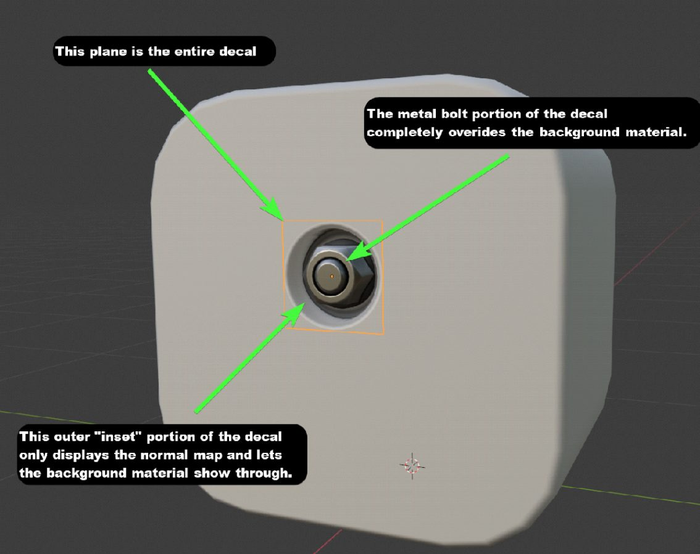
As you see in the image above, the decal is displaying ONLY its normal in certain areas (i.e. surrounding the bolt) but it displays all of its channels (diffuse, metallic, roughness and normal) on the bolt itself.
Allowing only the normal of the decal to show up in certain areas gives a really nice “built in look”. Because of this, this bolt will always look like part of the background no matter what material I use behind it.
Combined with Parallax Occlusion this is almost indistinguishable from real geometry.
Without the code change, a decal in UE4 shares transparency across all channels equally. This prevents you from being able to achieve these nice transitions from the background object to the decal.
2. DECALmachine
Note
This section just walks you though the atlasing and export process.
It's also covered in more detail in video form above.
Now that you’ve implemented the code above you can author your decals.
You can author them with any program, but I have found nothing that works better than DECALmachine and Blender out of the box. I’m actually very new to Blender and still do most of my work in Maya. However, it is still worth it to bring my models into Blender just for DECALmachine alone. I can always bring them back into Maya when I’m done and Blender is free so there is very little reason not to get it.
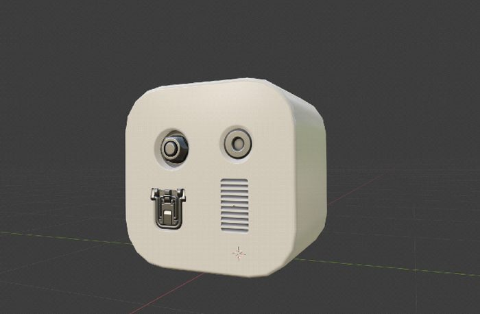
I’ve placed a few decals on this cube asset to represent a final model. Once you've finished your own asset in DECALmachine and are happy with how everything looks then it is time to create an atlas.
This is a very powerful feature in DECALmachine so definitely take some time to go through the Atlasing section above.
To create a new atlas from the decals you have placed you need to open up the DECALmachine sidebar in Blender by hitting the N hotkey. Then click on the MACHIN3 tab and go to the Decal, Atlas & Trim Sheet Creation section. Click Create new Decal Atlas from Scene, then re-pack/tweak as needed.
Once you’re happy, you need to Store selected Atlas.
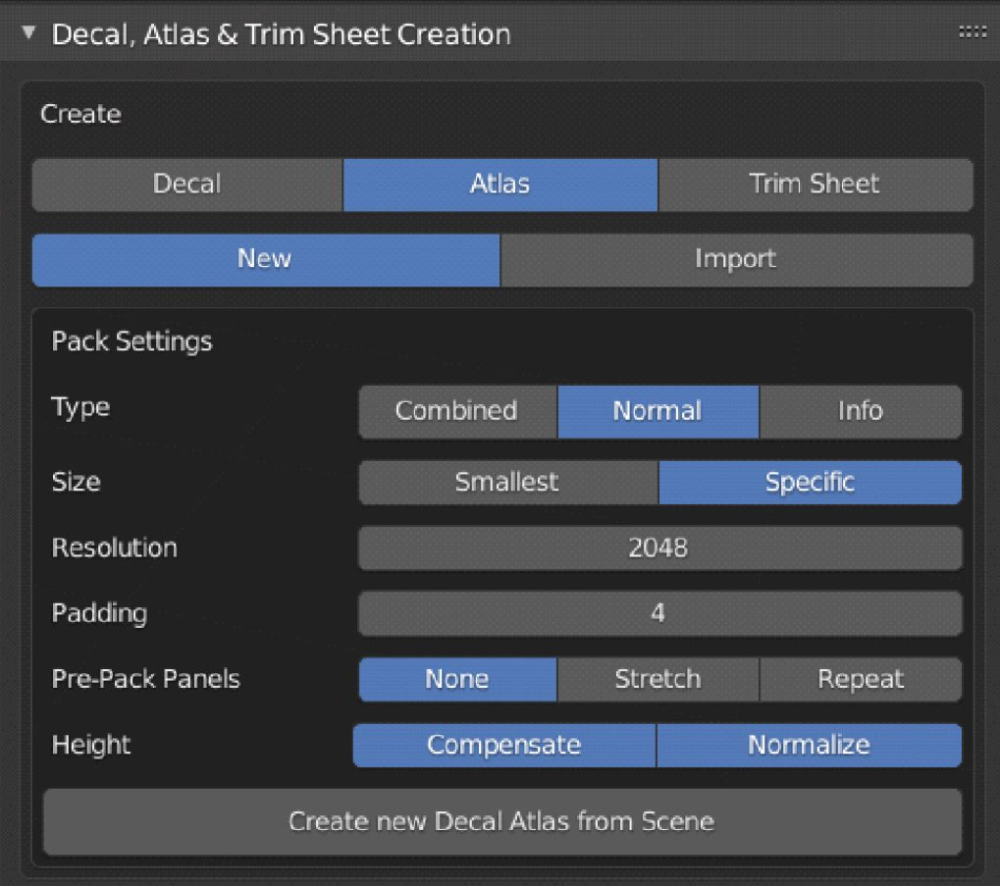
Next, Select your Atlas in in the export panel, and have your decals Use the Atlas.
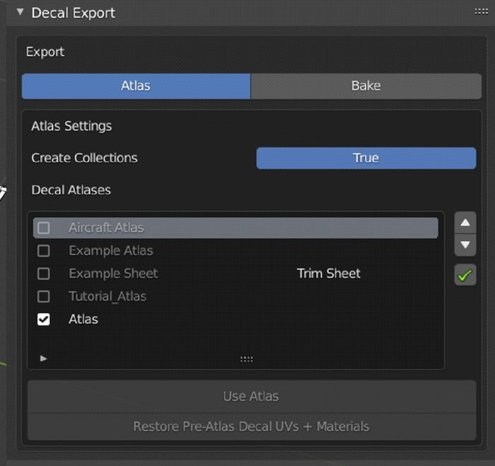
Now we can export the textures we need to set up everything in UE4.
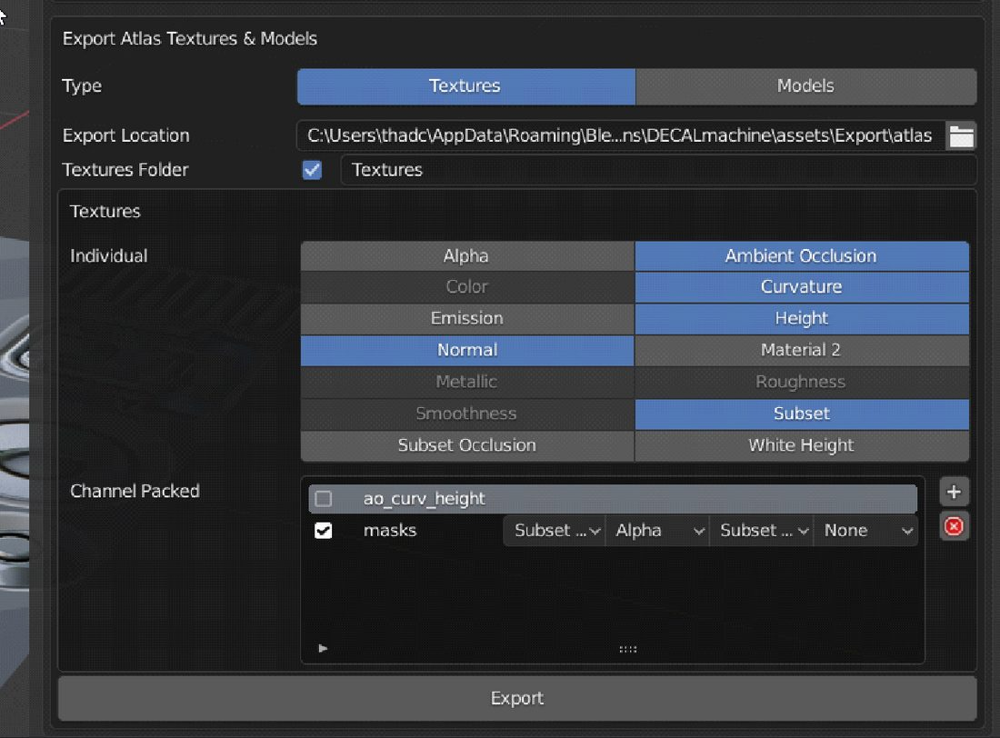 Your export panel should look something like this
Make sure you have masks enabled in the Channel Packed section. The four drop down menus should be set to the following:
- Subset Occlusion
- Alpha
- Subset Occlusion
- None
That is going to create our Opacity Mask that we talked about in Step 1,
which is the most important texture in getting this all to look correct in Unreal.
Once your textures are exported, you will need to export your model as an fbx. Just select everything and export it as one object.
3. Finalizing Textures
We are almost ready to set everything up in UE4. Before we do that however, I like to finish my textures in Substance Painter so that I can customize my atlas’ materials.
Also, UE4 does not currentlyv4.24 support AO for mesh decals, so I like to fake them in the texture. Normally this is a bad idea, but in this case it’s the only option. I’ll explain how in the next step.
For this step I use Substance Painter, but you are free to do this however you like.
In Painter it’s easy to add wear and dirt to my decals, etc.
To do this I bring the following maps, that I have just exported into Painter:
- Curvature
- AO
- Normal
- Subset
Then I use these maps to generate my final atlas textures for UE4.
I use the Subset texture as to mask where I want the materials of my decals to be - metal and paint in this instance.
The vent in the bottom right is solely in the normal map so it doesn’t receive any materials.
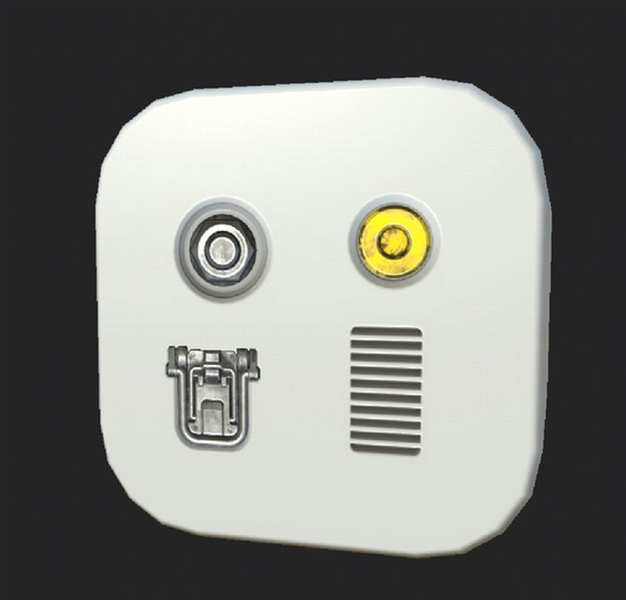
Here is what the cube looks like in Painter when I’m done. Note, there is no parallax here, just a normal.
I added a metal material to the left decals and painted the top right decal yellow. I also added some grunge to everything.
Faking AO
Since UE4 doesn’t have an AO channel for decals, make sure that ANY PART OF THE DECAL ONLY SHOWING THE NORMAL MAP is made black in the color map.
Note
DECALmachine itself, does not provide a color map for normal mapped Decals and so Atlases.
This will really help make things look correct so I highly recommend doing it. It should look like the image below when done.
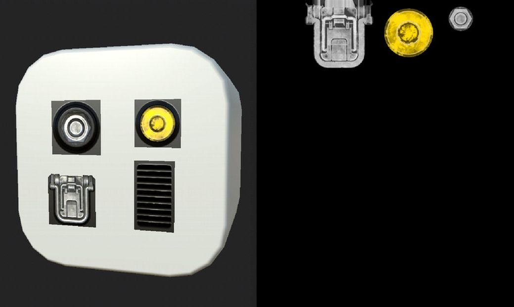 use the inverted subset mask to apply black color
If you do this correctly it will automatically work in UE4. This is due to how we exported the masks texture in Step 2. It’s complicated, but all you need to know is if your decal only has its normal map showing then it should be colored black for your diffuse / base color texture.
At this point you can export your final textures from Painter.
After that, you should have a Base Color, Packed Roughness/Metallic, and a Normal Map.
Take these textures along with the Height map and Opacity map you exported from DECALmachine, and import them all into UE4.
4. Decal Shader in UE4
Now that we have the final atlas textures created, we need to set up the decal shader in UE4.
And of course we are going to using mesh decals for this workflow, not decal actors.
There are many reasons for this, but performance alone is worth it. The cons versus using a projected decal actor is, that you cannot move them around in engine. However, DECALmachine makes adjusting them easy and you just need to re-export the mesh again.
First, create a material and call it whatever you like. This will be your decal material.
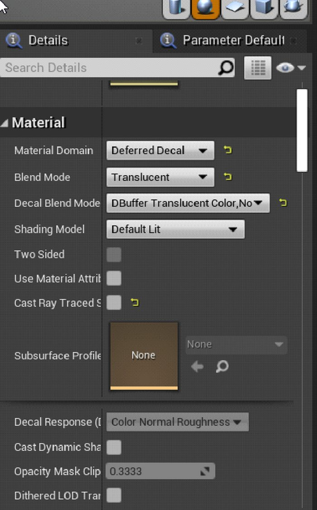
In the materials Details tab change the material domain, blend mode, and decal blend mode, to the properties above.
Now it’s just a matter of plugging in all of the maps we’ve created into their correct locations. Plug in your Base Color, Metallic, Roughness, and Normal to their corresponding channels.
The only new part of this process is the masks texture we exported in Step 2.
Make sure you leave that texture set to sRGB in its properties and connect it to the Opacity channel as seen below.
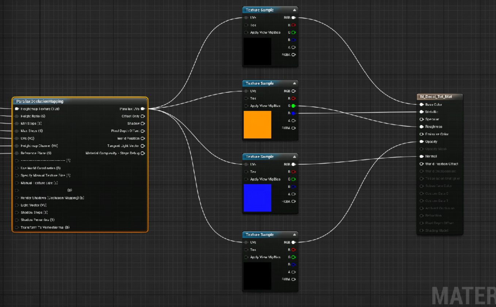
You can also see, that I have Parrallax Occlusion Mapping node connected to the UV inputs of my texture nodes, and I go into the settings for it below.
Parallax Occlusion Mapping
Plug the atlas height map at the top. I recommend you use the settings I have below for everything else.
But feel free to play around with it or use a Bump Offset Node instead.
Bump Offset doesn’t look quite as good but is cheaper and still holds up for most cases.
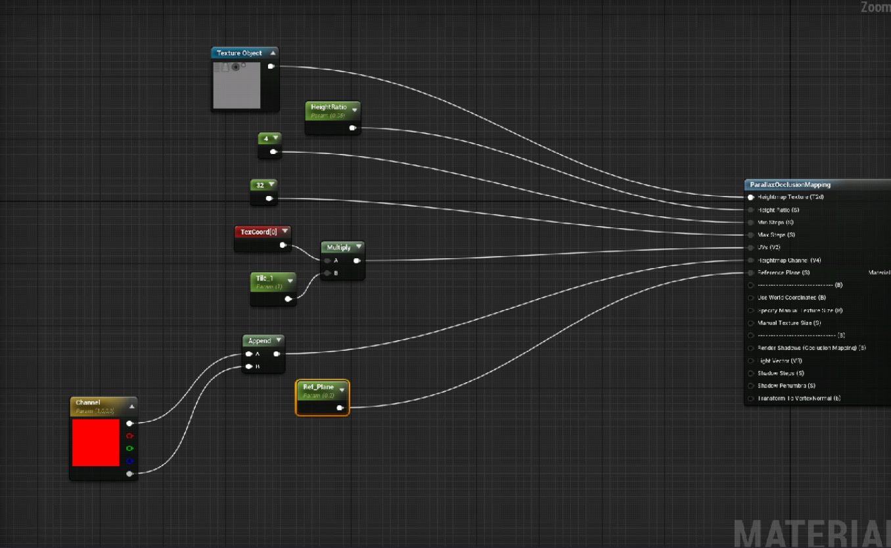
Conclusion
Now that we have all of our maps plugged in correctly, it should look like the image below.
You can use any material on the background cube object and the decals will look great due to the new opacity mask we generated.
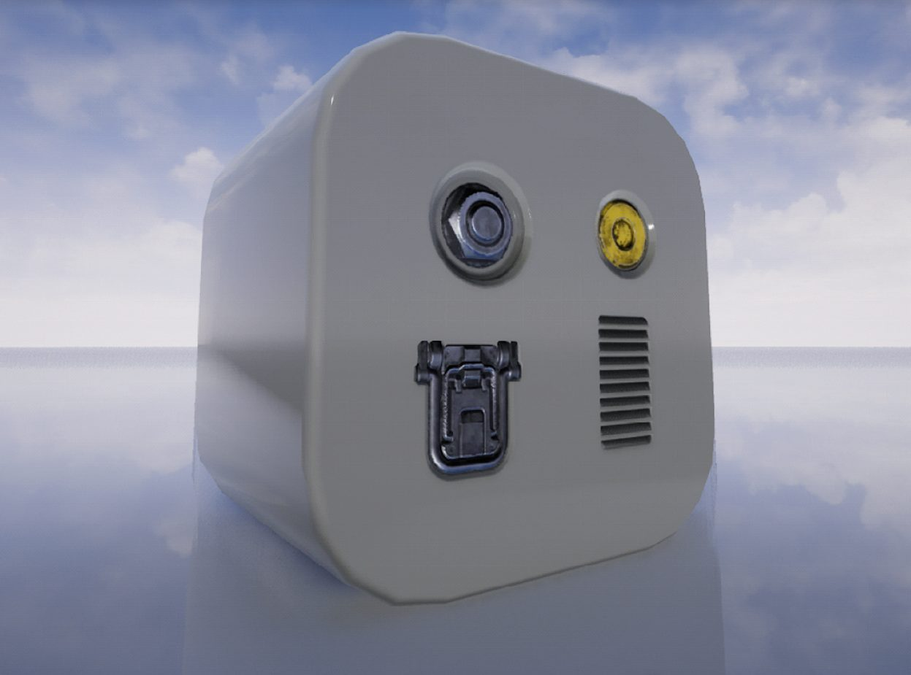
Here I swapped the cube’s material to metal and the decals blend in perfectly due to the new opacity mask and code.
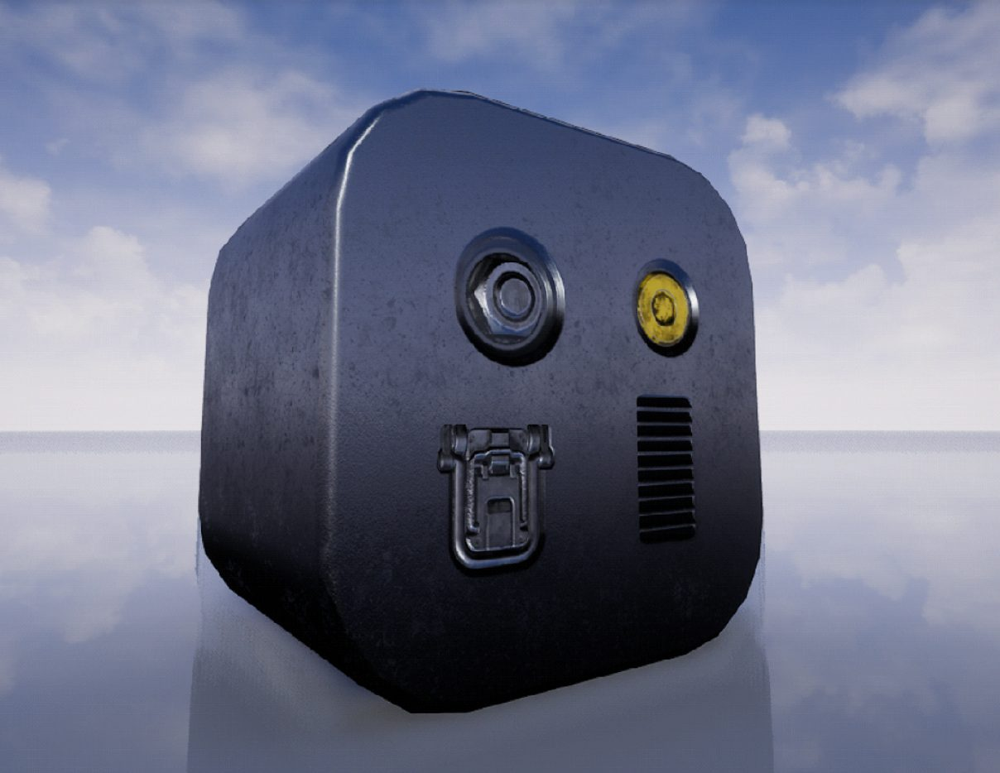
This was a very rudimentary example, but the pros for using decals for micro details combined with mid-poly models can be great.
No more texel density issues, lower texture memory, easy to edit, modular, faster to model, etc.
I hope this helped you out. I know it's fairly technical, but it is intended for devs that are looking for a decal solution with UE4. Our goal is to help get UE4 working even better with DECALmachine in the future.
Cheers,
Thad Clevenger,
Senior Artist at Funcom
Note
Again, I want to reiterate to please not contact Thad for support.
You can submit any questions or suggestions you have Blender Artists or polycount.